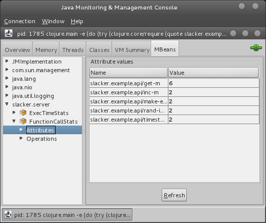
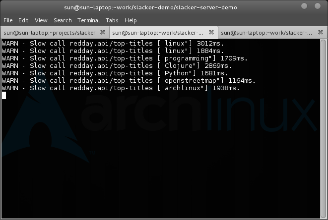

Transparent, non-invasive RPC by Clojure and for Clojure
(defn login [req]
(let [{user :user passwd :passwd} (:params req)]
(look-up-user-db user passwd)))
(use 'foo.users)
(defn login [req]
(let [{user :user passwd :passwd} (:params req)]
(find-user user passwd)))
(require '[foo.users :as users])
(require '[foo.search :as search])
(require '[foo.cf :as cf])
(defn login [req]
(let [{user :user passwd :passwd} (:params req)]
(users/find-user user passwd)))
(def search [req]
(let [{token :token options :options} (:params req)]
(search/search-for token options)))
(def recommend [req]
(let [{user-id :user} (:session req)]
(cf/recommend-items user-id)))
If you cannot split, you cannot scale.
IDL + Code Generation
Slacker is a non-invasive RPC framework designed for clojure.
With slacker:
(use 'slacker.server)
(require 'foo.users)
(start-slacker-server [(the-ns 'foo.users)] 2104)
This will expose all public functions under 'foo.users on
port 2104.
(use 'slacker.client)
(def sc (slackerc "10.60.1.2:2104"))
(use-remote 'sc 'foo.users)
(defn login [req]
(let [{user :user passwd :passwd} (:params req)]
(find-user user passwd)))
Create a slacker connection to 10.60.1.2:2104. Import all
functions of foo.users to current namespace (use-remote), just
like calling use locally.
Customizable behavior of client proxy
(use 'slacker.client)
(def sc (slackerc "10.60.1.2:2104"))
(defn-remote sc timestamp :async true)
@(timestamp)
;; (deref (timestamp) timeout)
(defn-remote sc timestamp :callback #(prn %))
(timestamp)
Resizable aleph connection pool based on commons-pool.
(use 'slacker.client)
(def sc (slackerc-pool "10.60.1.2:2104"
:exhausted-action :grow
:max-idle 12))
(use-remote 'sc 'foo.users)
By default, slacker uses carbonite(kryo) for
serialization. But you can also configure text based formats like :json
and :clj. In slacker 0.7, content compression is
supported.
(use 'slacker.client)
(def sc (slackerc "10.60.1.2:2104"
:content-type :json))
(def sc2 (slackerc "10.60.1.2:2104"
:content-type :deflate-carb))
Expose a HTTP port for debugging and test.
(use 'slacker.server)
(start-slacker-server [(the-ns 'foo.users)]
2104
:http 8080)
curl -d "[\"user\" \"passwd\"]" http://10.60.1.2:8080/foo.users/find-users.clj(use 'slacker.server)
(use 'slacker.interceptor)
(use '[slacker.interceptors.stats :only [function-call-stats]])
(use '[slacker.interceptors.slowwatchdog :only [slow-watch-dog]])
(start-slacker-server [(the-ns 'foo.users)] 2104
:interceptors (interceptors function-call-stats
(slow-watch-dog 5000)))
The call-stats interceptor exposes data via JMX.

Log slow calls and arguments.

Extending slacker server by adding your own interceptor.
(use 'slacker.interceptor)
(definterceptor logger
:before (fn [req]
(println (str "calling: " (:fname req)))
req))
Slacker cluster uses zookeeper as centralized registry. All servers and namespaces are registered in zookeeper. Clients read cluster information from zookeeper and establish connection to servers interested.
Also, clients are notified when connected server goes offline, or new server goes online, which provides certain namespaces. This enables high-availability of slacker services.
You don't have to change client configuration for adding a new instance of search function.
Register server to cluster
(use 'slacker.server)
(start-slacker-server [(the-ns 'foo.users)] 2104
:cluster {:zk "10.60.1.254:2181"
:name "foo-cluster"})
Configure slacker client for cluster.
(use 'slacker.client.cluster)
(def sc (clustered-slackerc "foo-cluster"
"10.60.1.254:2181"))
(use-remote 'sc 'foo.users)
Aleph is a Clojure framework for asynchronous communication, built on top of Netty and Lamina.
Lamina provides an event-driven analogue to Clojure’s sequences, called channels. Similar mechanisms have been used in languages such as Go, JoCaml, and C#.
Gloss is a byte-format DSL. It can turn complicated byte formats into Clojure data structures, allowing for easy use of custom network protocols and C libraries.
Provides try+ and throw+. Each is
100% compatible with
Clojure and Java's native try and throw both in source code and
at runtime. Each also provides new capabilities intended to
improve ease of use by leveraging Clojure's features like maps,
records, and destructuring.
Clojure wrapper of the fast Java serialization library: Kryo. Carbonite also provides built-in serializers for clojure native types.